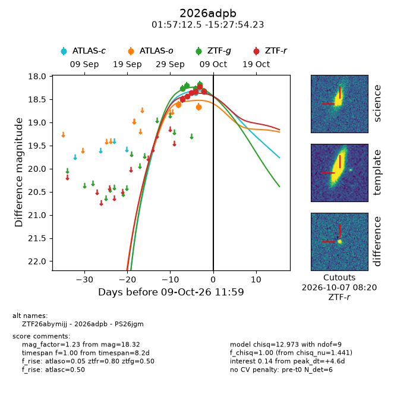
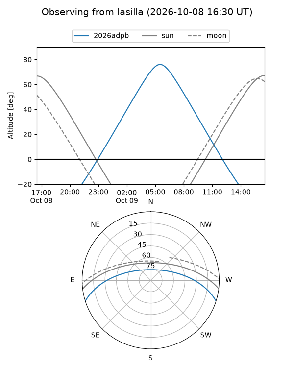
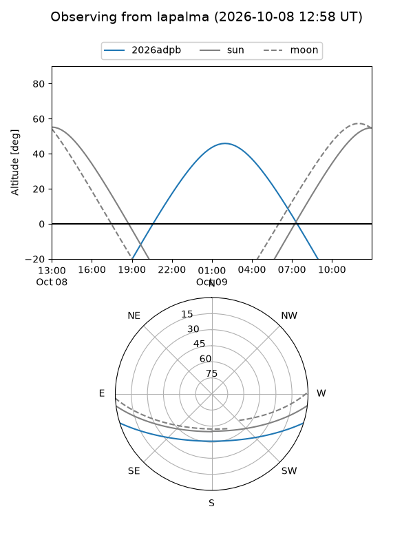
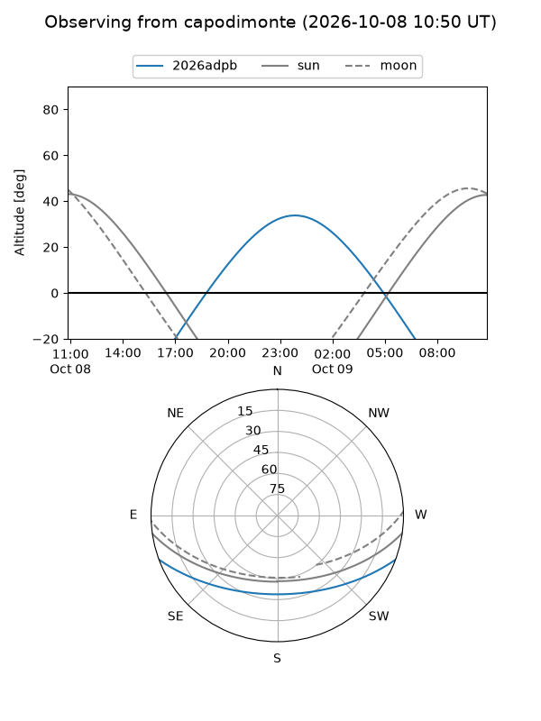
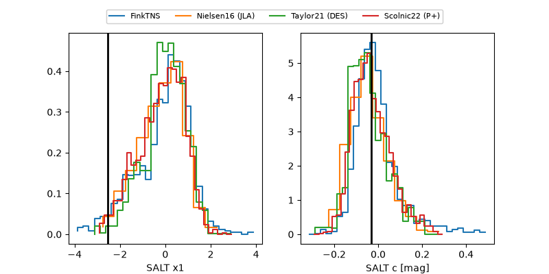

2026adpb
Target 2026adpb at 2026-10-09 12:01
Aliases and brokers:
FINK-ZTF: ztf.fink-portal.org/ZTF26abymijj
Lasair-ZTF: lasair-ztf.lsst.ac.uk/objects/ZTF26abymijj
ALeRCE-ZTF: alerce.online/object/ZTF26abymijj
YSE-PZ: ziggy.ucolick.org/yse/transient_detail/2026adpb
TNS name: wis-tns.org/object/2026adpb
Direct TNS query: direct search
alt names
ZTF26abymijj (ztf,fink_ztf)
2026adpb (tns,yse)
PS26jgm (panstarrs)
Coordinates:
equatorial (ra, dec) = 29.3023,-15.46507
equatorial (HMS+DMS) = 01:57:12.54,-15:27:54.23
galactic (l, b) = (178.9070,-70.78197)
Flags:
peak dt: +4.6
Photometry:
last atlasc=18.36, atlaso=18.67, ztfg=18.32, ztfr=18.33
1 atlasc, 2 atlaso, 5 ztfg, 6 ztfr detections
Lightcurve

Visibility



Additional plots
